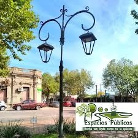
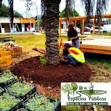
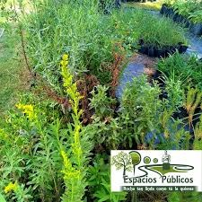

Se realizaron tareas de mantenimiento en plazas y espacios públicos, incluyendo corte de césped, limpieza y acondicionamiento general.

Monitoreo sanitario y tratamiento de palmeras afectadas por plagas, garantizando su conservación y seguridad.

Producción y cuidado de especies vegetales destinadas a la mejora de los espacios públicos del departamento.